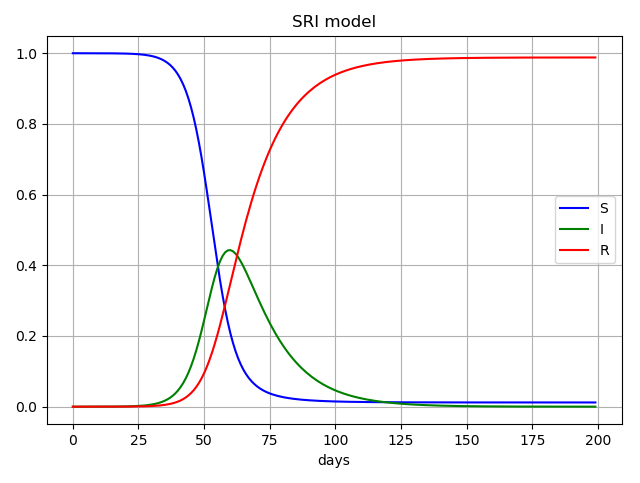
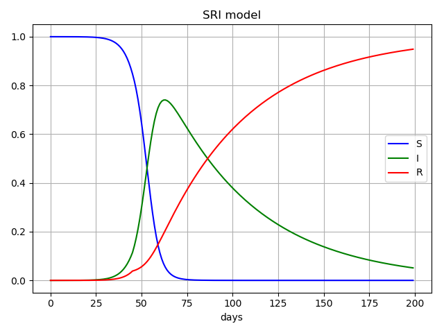
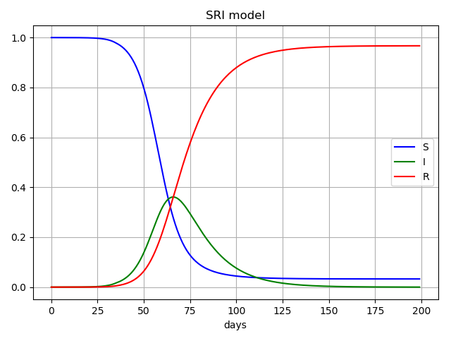
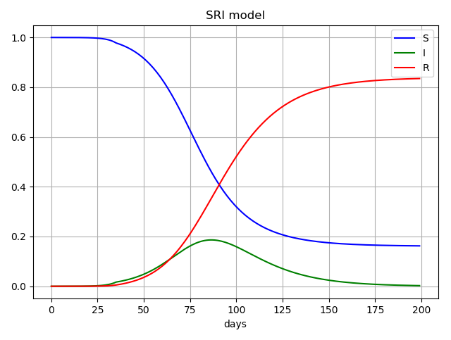
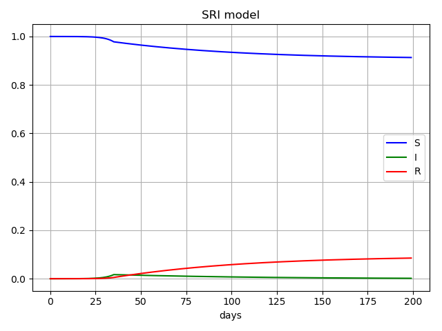

βは感染率、γは回復率を表し、γの逆数は感染期間が指数関数に従うときの平均値に相当する。
βIが感染力を表す。
なおこのモデルでは感染が確認され、隔離状態にある人は感染力を持たないため、Rに含まれる。
自覚症状がないまま感染し、市中で感染源となる人がIである。
初期条件としてS(0)=1, I(0)=0.00001を与え、この連立微分方程式を数値計算で解いた。（解析的に解くのは難しい。）

case1:非常事態宣言なし、医療崩壊も起こらない (β=0.3, γ=0.07)
いわゆる集団免疫の獲得により事態が収束する場合に相当する。

case2:非常事態宣言なし、医療崩壊を起こしたとき (β=0.3, γ=0.07→γ=0.02)
I=0.1で医療崩壊を起こしγが0.02に低下すると仮定した。

case3:非常事態宣言をしたが、接触率の低下が十分でない場合。 (β=0.3, γ=0.07→β=0.24)
35日目に非常事態宣言を発令し、βが0.24まで低下した場合。case1とほぼ変わらない。

case4:非常事態宣言をしたが、接触率の低下が十分でない場合。 (β=0.3, γ=0.07→β=0.15)
35日目に非常事態宣言を発令し、βが0.15まで低下した場合。ピークが遅れ、医療崩壊の危険性が下がっている。

case5:非常事態宣言をし、接触率が十分低下した場合。 (β=0.3, γ=0.07→β=0.06)
case4との違いは明らか。